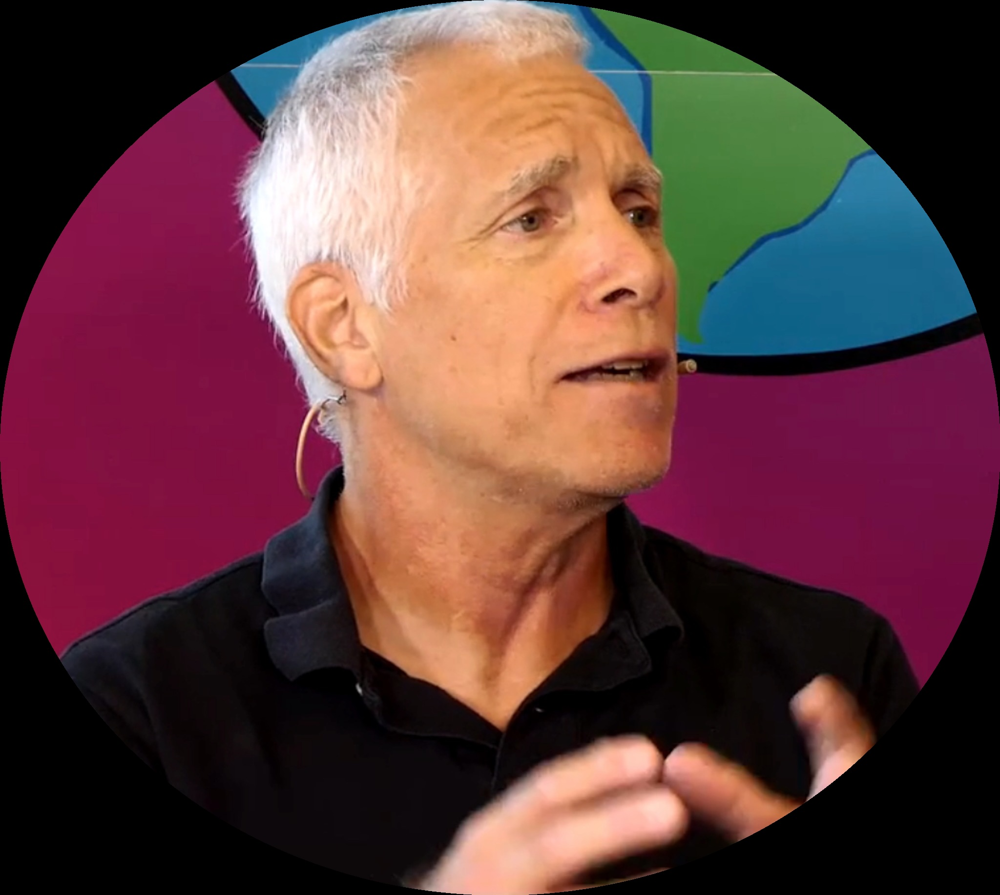

Builder · Explainer · System Thinker
After 30+ years in enterprise software, I've watched every major tech transition. Now I write weekly about what I'm seeing with AI — the patterns, the pitfalls, and the solutions.

Mark Levy
30+ years in enterprise software
DevOps.com · SD Times · LinkedIn
I publish weekly on LinkedIn, connecting what I learned in DevOps to what's happening with AI.
Most enterprises are repeating the same mistake with AI that they made with DevOps — only faster this time.
December 2025GDPval measures the ability to produce real economic deliverables. GPT-5.2 just hit 70.9%.
December 2025The message from 2017 still holds. The audience has expanded. The urgency is no longer optional.
November 2025Every click, query, and clipboard entry can leave the enterprise perimeter. That's not a feature.
I also write for DevOps.com and SD Times.
Follow on LinkedInI spent 30+ years in enterprise software — developer, product manager, product marketing, all the way to Sr. Director. The last 12 years I focused on DevOps and DevSecOps.
I've watched every major tech transition: mainframes to PCs, on-prem to cloud, waterfall to agile, ops to DevOps. Each time, people said "this changes everything" and "you'll be left behind." Each time, the patterns were more similar than different.
Now I'm watching the same thing happen with AI. And I'm writing about it — not as an AI expert, but as someone who's seen this movie before.
I'm a builder — I've created multiple apps and services, set up my own offline LLM environment with a RAG pipeline, and I experiment with AI tools weekly. I'm an explainer — I write about what I'm learning so others can benefit. And I'm a system thinker — I see patterns across technologies and organizations. I believe you learn by building, not just reading.
Sometimes I speak at conferences and corporate events. I'm not a professional speaker — I'm a practitioner who shares what I'm learning.
The message I shared in 2017 about DevOps now applies to everyone. What that means and what to do about it.
What DevOps got right about organizational change that enterprises are getting wrong with AI.
Why AI browsers create security risks and what enterprises should consider instead.
Pattern recognition from mainframes to AI. What actually predicts success in technology shifts.
If you think I'd be a fit for your event, feel free to reach out. I'm selective but open to the right opportunities.
I help technical teams and startups communicate what they're building — around AI, DevOps, DevSecOps, and enterprise technology. Specifically: content strategy, positioning, and narrative refinement.
The work is grounded in 30+ years in enterprise software. I help teams explain how their approach actually works — in real production environments, not marketing abstractions. The goal is credibility: help your technical buyers understand why your solution matters.
Project-based, selective. If you're building something technically interesting and want help telling that story clearly, reach out.
I read every message. Can't promise I'll respond to everything, but I try.